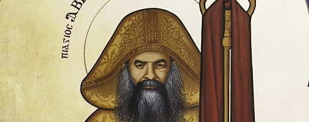

Saint Cyrille 6
Découvre l'histoire des papes de l'église copte orthodoxe.
L'Eglise commémore aussi en ce jour le décès du pape saint Cyrille (Kyrillos) VI le 116ème patriarche de la prédication de saint Marc.Ce pape naquit à Damanhour le 8 Août 1902 d’une famille pieuse. Son père était un diacre réputé pour sa bonne conduite et sa belle voix et sa mère était une femme vertueuse. Ils lui donnèrent le nom d’Aazer et l’élevèrent dans l’amour de l’Eglise, des saints et de la Bible. Sa famille se déplaça à Alexandrie où il acheva ses études secondaires et travailla dans une compagnie de navigation.
Le jeune Aazer voulut devenir moine. Il démissionna et rencontra abba Youannes (Jean) le métropolite d’al-Béheira qui était sécrétaire de la prédication de saint Marc . Ce dernier était installé dans les locaux du patriarcat de la ville d’Alexandrie et supervisait les monastères de la vallée de Scété. Il apprécia la requête du jeune homme et l’envoya au monastère al-Baramous. Il y fut admis moine le 25 Février 1928 sous le nom de Mina al-Baramoussy. A cet endroit il poursuivit son combat spirituel et s’attacha à lire la Bible, les livres spirituels et les écrits des pères de l’Eglise suivant l’exemple de saint Isaac le syrien et d’autres.
Le 18 Juillet 1931 il fut ordonné prêtre par abba Dimitrios le métropolite d’al-Ménouféyah. Dès ce moment il célébra la sainte liturgie eucharistique quotidiennement tout le long de sa vie.
Il fit des études à la faculté théologique des moines qui était basée à Helouân et, lorsqu’il apprit que le pape Jean (Youannes) voulait le sacrer évêque, il s’échappa au monastère d’abba Chénouté à Sohag. Sur l’ordre du pape, il revint et lui fit connaitre son désir de s’isoler. Il l’autorisa à le faire sous la conduite spirituelle de l’higoumène Abd-el-Messih el-Mas’oudi qui était un moine adorateur. Alors, il s’installa dans une grotte qui était à 1 heure de marche du monastère et y demeura de 1932 jusqu’à 1936. A cette date, il s’installa dans un moulin abandonné situé sur la colline d’al-Moukattam où il célébrait la divine liturgie tous les jours selon son habitude. Vers la fin de 1941, il se rendit au vieux Caire et s’installa au monastère de l’ange ainsi que dans d’autres églises de cet endroit puis, en 1943, il lui fut confié la direction du monastère d’abba Samuel le confesseur au mont al-Kalamoun à Maghagha. Il le repeupla, réhabilita son église et construisit des cellules pour les moines. Abba Athanase le métropolite de Béni-Souef le fit higoumène et le revêtit du Schème puis, en 1947, il édifia l’église saint Ménas dans le vieux Caire. Certains moines, qui devinrent par la grâce de Dieu évêques, y furent ses disciples. Plus tard, en 1949, il y adjoignit un foyer pour les étudiants qui n’était pas originaires du Caire. Il fut réputé par sa Foi puissante et sa prière permanente. Les malades venaient le voir de tout le pays, il priait pour eux et ils guérissaient à cause de sa Foi.
Il fut choisi par Dieu pour être le 116ème pape d’Alexandrie par le tirage au sort qui eut lieu sur l’autel selon la coutume et il fut sacré pape le dimanche 10 Mai 1959. Le 28 Juin 1959 il sacra le premier patriarche catholicos d’Ethiopie, et un accord entérinant les liens d’amitié entre les Eglises d’Egypte et d’Ethiopie fut signé entre eux.
En novembre 1959 il déposa la première pierre du monastère du grand martyr saint Ménas à Mariout y ramena une partie de ses saintes reliques et y construisit des églises ainsi qu’une cathédrale aussi prestigieuse que celle qu’édifia le pape Théophile le 23 pape d’Alexandrie, au 5ème siècle dans la cité historique de Mariout. Alors les chants et la vie monastique revinrent en ce lieu.
En Janvier 1965, sa sainteté Cyrille VI présida le congrès des Eglise orthodoxes orientales qui se tint à Addis-Abeba. Ce congrès est considéré comme le premier concile des Eglises non-chalcédoniennes des temps modernes. Il y fut discuté de nombreux sujets importants se rapportant au ministère et à la prédication à l’époque actuelle ainsi que les relations entre ces Eglises et les autres Eglises chrétiennes.
En 1967, Il consacra le saint chrême. Ceci fut un évènement historique car c’était la 30ème fois que cela se pratiquait dans l’Eglise copte orthodoxe.
Le 2 avril 1968 la très sainte Vierge Marie est apparue sur les coupoles de son église à Zeitoun, une banlieue du Caire. Cet évènement était un signe céleste important sans précédent depuis que le Saint Esprit s’est répandu sur les apôtres le jour de la Pentecôte. Elle apparut entourée d’un halo de lumière céleste d’une beauté indescriptible par les êtres humains. Ces apparitions durèrent plusieurs mois s’accompagnant de colombes lumineuses ainsi que d’odeur d’encens. Un grand nombre de malades, de différentes ethnies et religions, furent guéris, des aveugles ont recouvré la vue et des paralysés purent remarcher.
En juin 1968, sa sainteté Cyrille VI reçut les reliques de saint Marc après une absence d’environ 11 siècles de la terre d’Egypte. Il l’installa dans un sanctuaire amménagé sous les autels de la nouvelle grande cathédrale saint Marc qu’il avait édifiée sur les terrains d’abba Rouweis dans le quartier d’al-Abbassyeh au Caire. Il l’inaugura dans de grandes festivités où étaient présents le président de la république Gamal Abd-el-Nasser et l’empereur d’Ethiopie Haïlé Sélassié 1er ainsi que des délégations des différentes Eglises et une grande foule de fidèles.
Le pape Cyrille VI persévérait dans la prière des louanges de minuit qu’il commençait avant le lever du soleil et, qu’il poursuivait par la divine liturgie. Il traversa de nombreuses épreuves mais as toujours été soutenu par le Seigneur et aucun de ceux qui s’opposaient à lui ne réussit. Il accomplit de nombreux miracles avec des chrétiens et des non-chrétiens en Egypte et ailleurs car il était un homme de prière et de miracles. Il devint une borne importante dans l’histoire de l’Eglise copte orthodoxe. Pendant son pontificat, il consacra plus de vingt évêques et métropolites ainsi que le patriarche catholicos d’Ethiopie.
Lorsque Dieu voulut l’appeler à Lui, il en fut inspiré dans plusieurs visions. Il en parla avec sagesse à ses proches. Après une courte maladie, il décéda à un âge avancé le 9 Mars 1971 après Jésus Christ, le 30 Méchyr 1687 de l’ère des martyrs et fut enterré dans la cathédrale saint Marc qu’il avait édifiée.
Le 23 Novembre 1972, 14 Athor 1689, la veille de la fête du martyre de saint Ménas, sa dépouille fut transférée au monastère de saint Ménas à Mariout par sa sainteté le pape Chénouda III qui se conformait ainsi à ses volontés, afin d’être auprès de son saint patron. Il y demeure toujours dans un sanctuaire installé sous l’autel de la cathédrale du monastère où un grand nombre de fidèles se rendent. On y constate de nombreux miracles.
Le saint synode reconnut la sainteté de notre père le pape Cyrille VI lors de sa réunion du 20 Juin 2013 sous la présidence de sa sainteté le pape Tawadros II.
La première église édifiée à son nom fut consacrée le dimanche 23 Méchyr 1730 (2 Mars 2014) dans le monastère qu’il avait édifié à Mariout.
Poser une question
Si vous avez une question, quelque chose que vous ne comprennez pas ou une suggestion pour le site informez-le en remplissant ce formulaire !